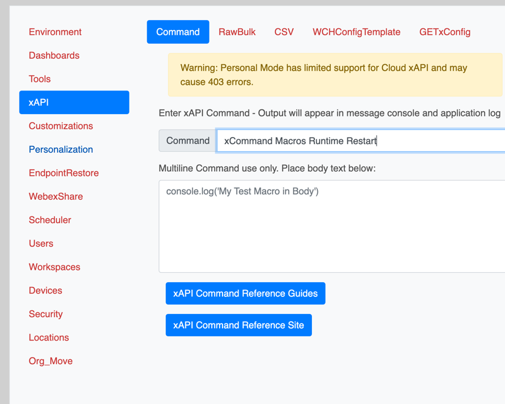

Under Construction
This Lab is under development for Webex One 2025
If you're looking to use the collateral made for WebexOne 2024, please use the link below
4.10 Deploy Macros via CE-Deploy
Abstract
Macros enhance your customization capabilities, allowing you to tailor your experience exactly as you want it. However, deploying these macros can be challenging, especially when dealing with multiple endpoints. While Control Hub supports single-endpoint deployment, this approach becomes cumbersome and time-consuming for larger deployments. With CE-Deploy, you can roll out a macro in minutes to hundreds or even thousands of endpoints. The CE-Deploy Macro Factory also enables you to monitor your deployment for consistency and performance without needing to log into the endpoint admin portal or control hub. Additionally, you can write your macro code directly in CE-Deploy and deploy it in just a few easy steps. In this lab, we will write a new macro, save it, and deploy it to your endpoints. We will then use the Macro Factory to monitor the rollout of everyone's macros.
CE-Deploy Macro deployment and the Macro Factory
4.10 Lessons
4.10.1 Open CE-Deploy and load your environment you created in the previous lab
Loading Environments
To load an environment, use the dropdown in the Environment loading section and select your new Environment and select ==Load Environment==.
Then select ==Design->Macro Editor== from the main menu
{kind=link}
4.10.2 Copy the following code and paste it into the editor page and save the file as ==LaunchHalfwake.js==
| LaunchHalfwake.js | |
|---|---|
1 2 3 4 5 6 7 | |
{kind=link}
4.10.3 Click ==Save File==.
4.10.4 Name your file ==LaunchHalfwake.js== and click ==Save==
4.10.5 Exit the Macro Editor.
4.10.6 Select ==Customizations->Macros== from the deployment features panel.
4.10.7 Using the Macros deployment feature we can easily deploy a macro to hundreds of endpoints in minutes. Name your macro LaunchHalfwake and use the Macro Javascript File Browse button to select the js file you create just moments ago.
Ensure the ==Activate on deployment== checkbox is selected.
4.10.8 Under deployment Options use the dropdown to select Tags and enter your pod tag for your device.
{kind=link}
4.10.9 Again ensure the ==Video Devices Only== checkbox is selected.
4.10.10 Press button Start Deployment.
4.10.11 Ensure the ==Scheduler== has the ==Run Deployment Now== check box selected and click ==Next==.
4.10.12 The Message Console will now appear, you can follow along the deployment process.
{kind=link}
4.10.13 You just deployed a macro to your device and activated it, we still need one more step to ensure that it is in fact running. Unlike the device web admin portal which will restart the macro engine automatically everytime a change is made to a macro the APIs are not as polite. So in the next step we will use CE-Deploy xCommand to restart the endpoint macro engine.
4.10.14 Open the deployment panel xAPI->Command feature and enter the restart command:
xCommand Macros Runtime Restart
{kind=link}

4.10.15 Under deployment Options use the dropdown to select Tags and enter your pod tag for your device.
4.10.16 Ensure the ==Video Devices Only== checkbox is checked.
4.10.17 Press button Start Deployment.
4.10.18 Ensure the ==Scheduler== has the ==Run Deployment Now== check box selected and click ==Next==.
4.10.19 The Message Console will now appear, you can follow along the deployment process.
4.10.20 We have our macro rolled out across all our endpoints but lets checkin on the other pods and see how they doing. We are going to use the Macro Factory to monitor how the other pods are doing. In the deployment panel select the Dashboards. Do not select the Macro Factory just yet. First we need to select our deployment option.
{kind=link}
4.10.21 This time around we are going to select the ==Org Id==
{kind=link}
When you select Org Id, the id automatically populates for our lab Control Hub org.
4.10.22 Select the Macro Factory from the Dashboards
{kind=link}
You should now see the Macro Factory appear with all the pod endpoints that have added their macros.
{kind=link}
Take a look around. Keep it open and move the window to the side when done. We are going to use the Macro Factory to clean up later.
Success
Now that we have our macro deployed we will turn our attention to deploying the accompanying extension to make it work.
Macro Factory Add a Macro
Can you load or remove a different Macro from an earlier lab? Have a go, its easy.
Tip
Things to note for the Macro Factory.
- Visual way to monitor macros
- Easy to use buttons, no need to remember commands
- Great for managment of a few endpoints adding, removing and activating macros
- For large bulk rollouts of Macros using the Deployment panel Customizations->Macros is a better option